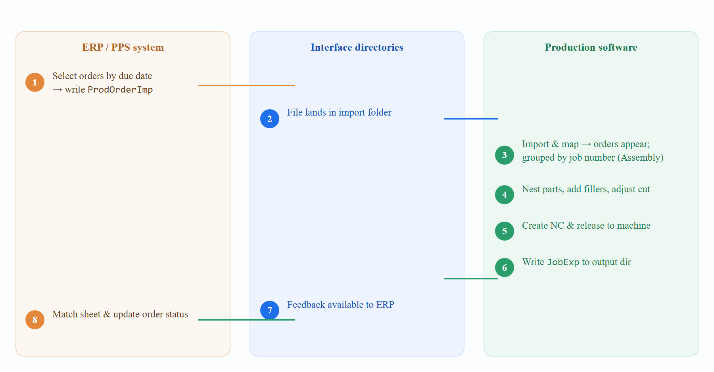

End-to-End Workflow
A typical production cycle moves an order from the ERP/PPS system, through nesting and NC generation in the production software, and back to the ERP/PPS system as job feedback.

4.1 The cycle, step by step
-
Order selection (ERP). The planner selects the orders to produce — typically by target/due date, possibly spanning several end customers — and the ERP writes a
ProdOrderImp*.xmlinto the import directory. Files are usually timestamp-prefixed, e.g.2026.01.15_09.12.03_ProdOrderImp1000200.xml. -
Import & mapping. The production software imports the file. On the first import of a new layout, the Spreadsheet Mapping dialog opens so the operator can map fields; thereafter a saved mapping is reused automatically.
-
Grouping into a job. Imported orders carry a job / collective-order number in the
Assemblyfield, which is used to group them and to set the job number. The operator opens or creates that job and adds the orders. -
Nesting. Parts are nested onto sheets automatically or manually. Additional “filler” parts can be added (via a further
ProdOrderImp), and a partial nest of an order is possible. The cut program is reviewed and adjusted. -
NC & release. NC code is generated and the job’s layouts are released to the machine. At release the full production package and setup documents are published.
-
Job export. A
JobExp*.xmlis written to the PPS output directory describing the released sheets and the parts nested on them. -
ERP update. The ERP/PPS system reads the feedback file and updates its own order status. The used sheet can be matched automatically to the ERP’s sheet record using sheet size plus the external sheet name.
|
Note
|
Housekeeping. Orders that were never placed into a job can later be deleted again through the interface (see §7). Once an order is part of a job, it can no longer be removed via the interface and must be handled inside the production software. |